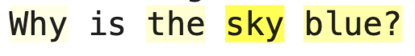
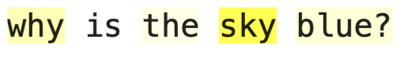

About TokenSHAP
The method introduces an efficient way to estimate the importance of tokens based on Shapley values, providing interpretable, quantitative measures of token importance. It addresses the combinatorial complexity of language inputs and demonstrates efficacy across various prompts and LLM architectures.
TokenSHAP represents a significant advancement in making AI more transparent and trustworthy, particularly in critical applications such as healthcare diagnostics, legal analysis, and automated decision-making systems.

Key Features
Interpretability for LLMs
Delivers a methodical approach to understanding how individual components of input affect LLM outputs.
Monte Carlo Shapley Estimation
Utilizes a Monte Carlo approach to efficiently compute Shapley values for tokens, suitable for extensive texts and large models.
Versatile Application
Applicable across various LLM architectures and prompt types, from factual questions to complex multi-sentence inputs.
Installation
Install from PyPI:
pip install tokenshap
Or install from source:
git clone https://github.com/ronigold/TokenSHAP.git cd TokenSHAP pip install -r requirements.txt
Usage Examples
Local Model Usage
# Import TokenSHAP from token_shap import * model_name_or_path = "meta-llama/Llama-3.2-3B-Instruct" model = LocalModel(model_name_or_path) splitter = StringSplitter() token_shap = TokenSHAP(model, splitter) # Analyze token importance prompt = "Why is the sky blue?" df = token_shap.analyze(prompt, sampling_ratio=0.0, print_highlight_text=True)
API Model Usage
# Import TokenSHAP from token_shap import * model_name = "llama3.2:3b" api_url = "http://localhost:11434" api_model = OllamaModel(model_name=model_name, api_url=api_url) splitter = StringSplitter() token_shap_api = TokenSHAP(api_model, splitter, debug=False) # Analyze token importance prompt = "Why is the sky blue?" df = token_shap_api.analyze(prompt, sampling_ratio=0.0, print_highlight_text=True)
Citation
If you use TokenSHAP in your research, please cite our paper:
@article{goldshmidt2024tokenshap,
title={TokenSHAP: Interpreting Large Language Models with Monte Carlo Shapley Value Estimation},
author={Goldshmidt, Roni and Horovicz, Miriam},
journal={arXiv preprint arXiv:2407.10114},
year={2024}
}